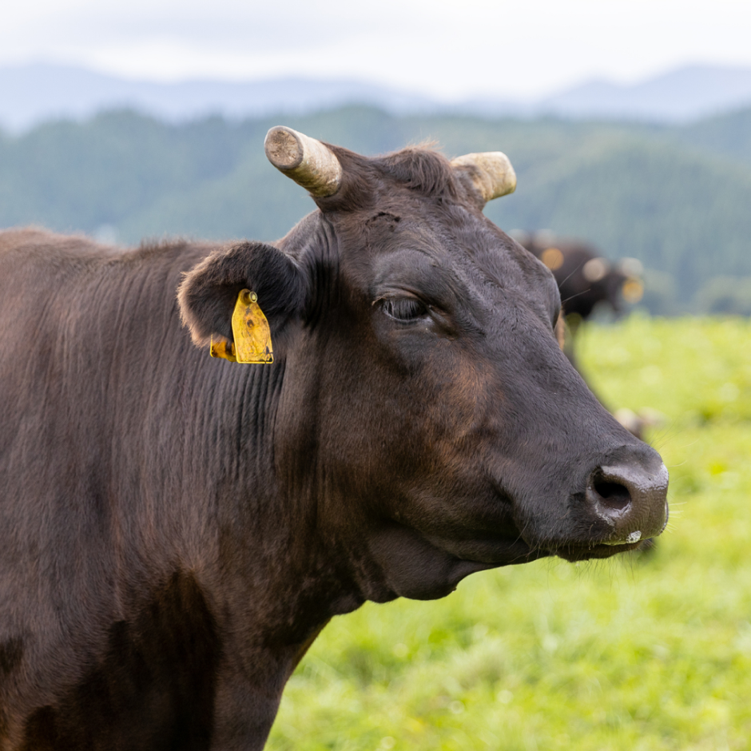
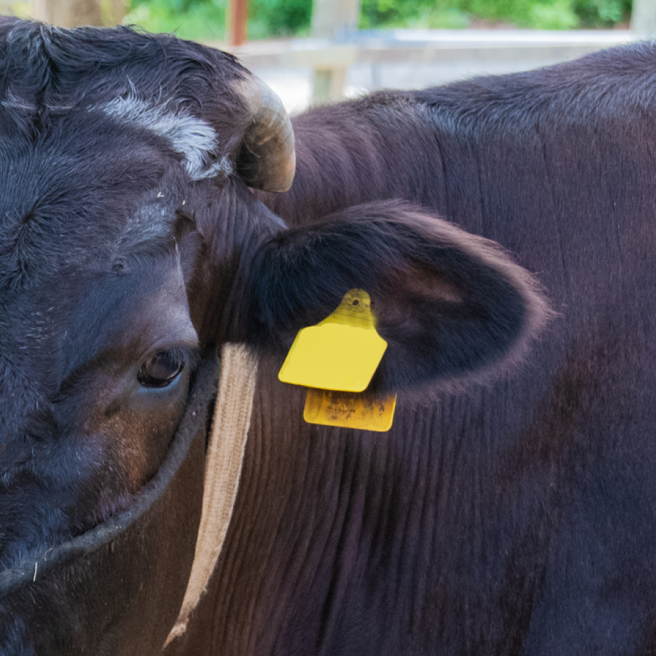
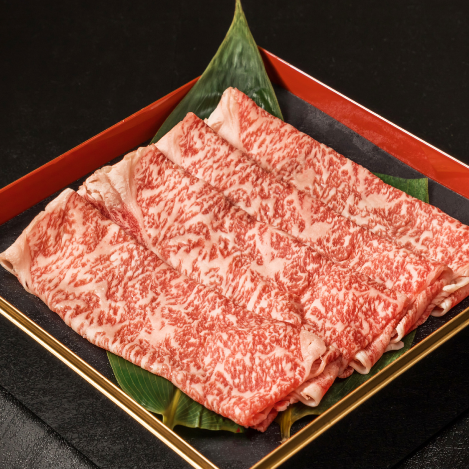
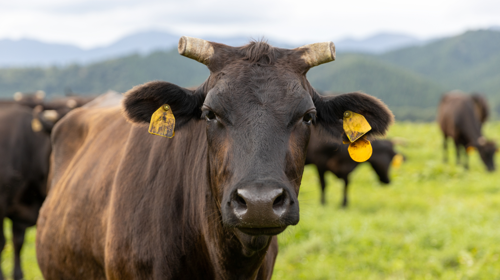
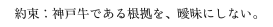
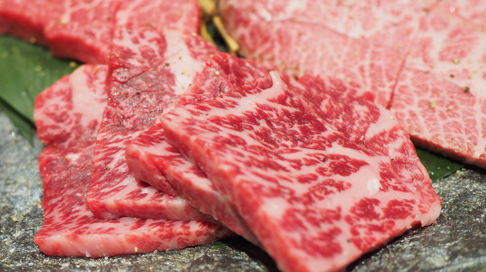
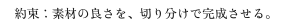
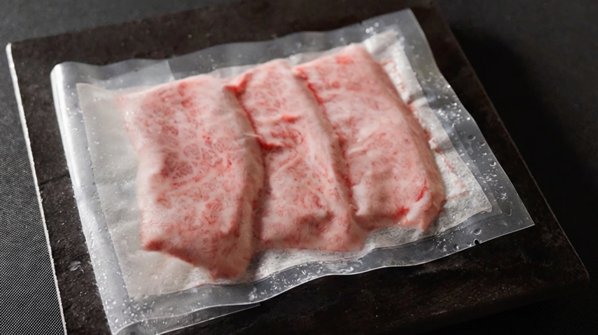
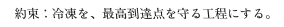

神戸牛とは？
世界が認めた、“但馬”の称号。
神戸牛は、ただの呼び名ではありません。
血統・産地・品質など、
厳格な基準を満たした
牛だけに与えられるブランドです。
iiniku翔は、その価値を“説明できる形”で、
最高の状態に整えて届けます。
-
限られた牛だけが名乗れる。
だから希少。神戸牛は「兵庫県産の但馬牛なら何でも」ではありません。
枝肉ごとに基準をクリアしたものだけが、神戸牛として認定されます。そのため流通量には限りがあり、
同じ“神戸牛”でも個体ごとに表情が違う。
iiniku翔は、この希少性を“演出”として語るのではなく、
認定の根拠と状態を見極めた上で、納得できる分だけを取り扱います。 -
証明できる牛だけを扱う。
根拠は、ラベルに残る。本物の神戸牛には、認定を示す情報が紐づいています。
iiniku翔では、仕入れ時のラベル・証明関連を管理し、
「神戸牛であること」を追える状態で運用します。
おいしさは感覚だけで語れても、
信頼は根拠がないと積み上がらない。
だから私たちは、
目に見える証拠と目利きの判断の両方を残します。 -
格付けは“記号”ではなく、
選定の材料。神戸牛は格付けや等級で語られがちですが、
本当に重要なのは「その個体が、どうおいしくなるか」。
脂の質、きめ、香り、赤身の伸び方——
数字や呼び名だけでは測れない要素が、食べた瞬間の満足を決めます。
iiniku翔は、その日の状態を見極め、
用途（焼肉／すき焼き／しゃぶしゃぶ／ステーキ）まで逆算して、
“いま一番おいしい食べ方”に合わせて仕立てます。
Strengths 3つの強み
-
01
“本物”を証明できる神戸牛だけ
iiniku翔は、仕入れた肉を「神戸牛です」と言うだけで終わらせません。
大切なのは、“そう言える根拠”が手元に残っていること。
認定ラベルや証明に紐づく情報を確認・管理し、追える形で運用します。
希少性を語る前に、根拠を揃えて品質を語る。
「本物か」「説明できるか」を、仕入れの基準にしています。
-
02
部位と用途から逆算して、仕立てる
同じ神戸牛でも、部位や切り方で食感・香り・噛み切りやすさは変わります。
iiniku翔は繊維や筋、脂の層を読み、
用途（焼肉／すき焼き／しゃぶしゃぶ／ステーキ）に合わせて仕立てます。
厚みやサイズ、香りが立つ断面まで想定。
“食べ方まで設計する”ことが、iiniku翔の仕立てです。
-
03
ゼロカラ急速冷凍で、品質を止める
iiniku翔の冷凍は、妥協ではなく品質設計です。
ゼロカラ急速冷凍で劣化ゾーン（-1℃〜-5℃）を短時間で通過し、
ドリップや食感変化を抑えて、色・旨味をできる限りキープ。
「冷凍だから仕方ない」を前提にしない。
“冷凍したのに冷凍じゃない”体験を当たり前にしたい。